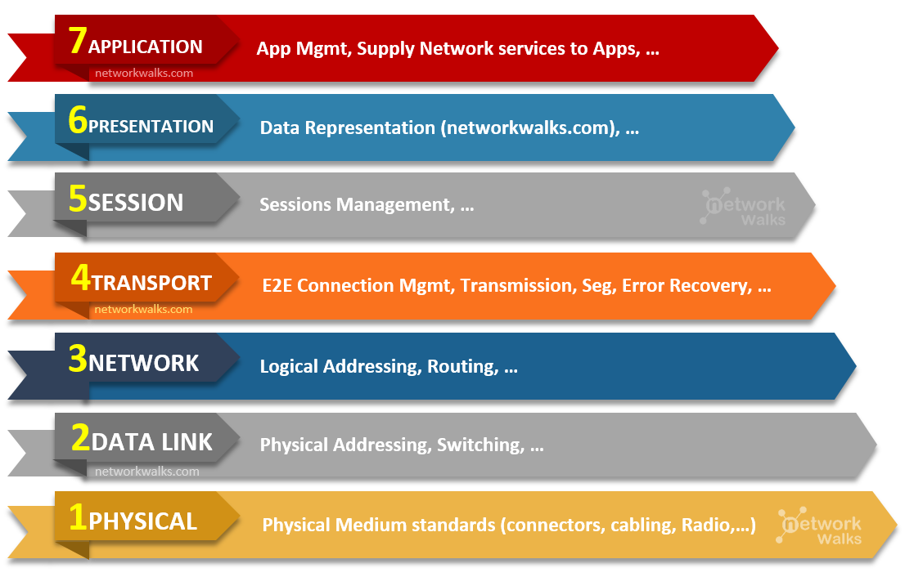
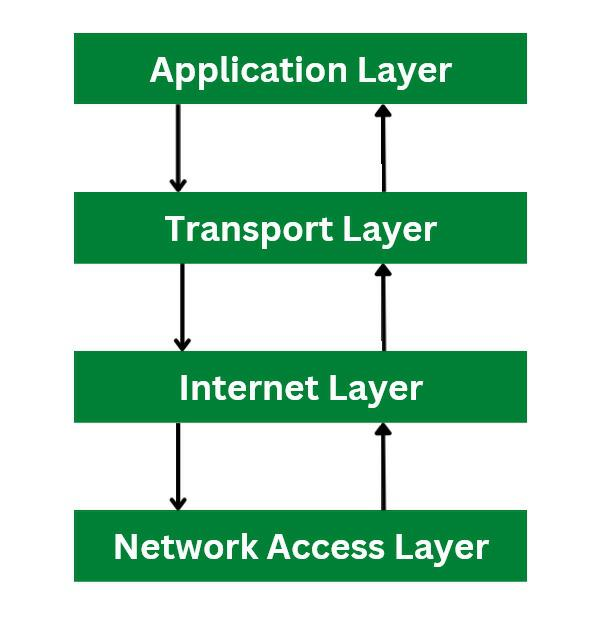
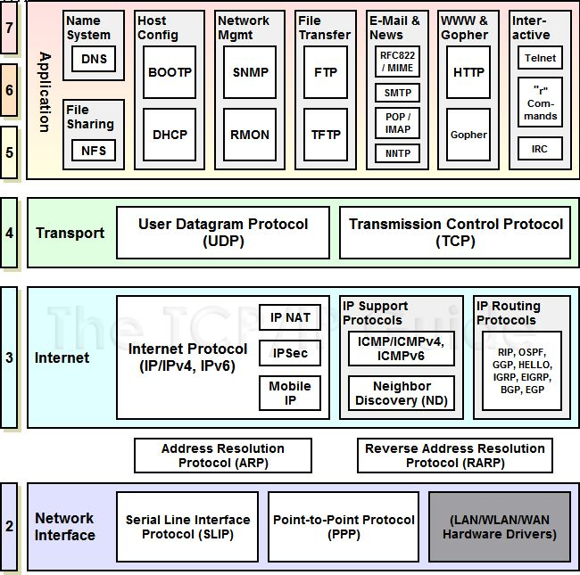
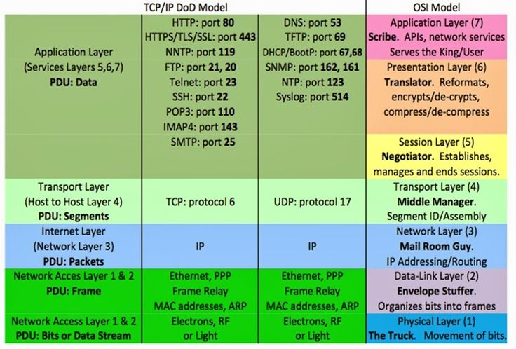
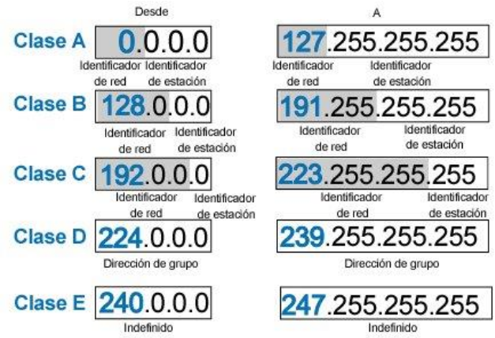
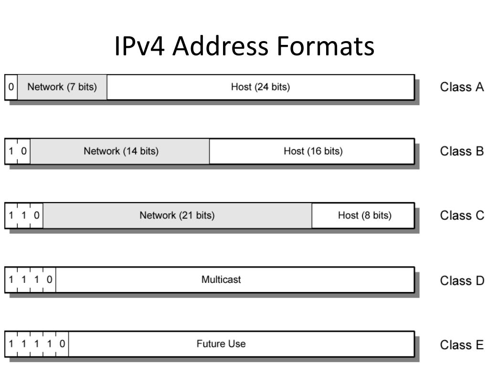
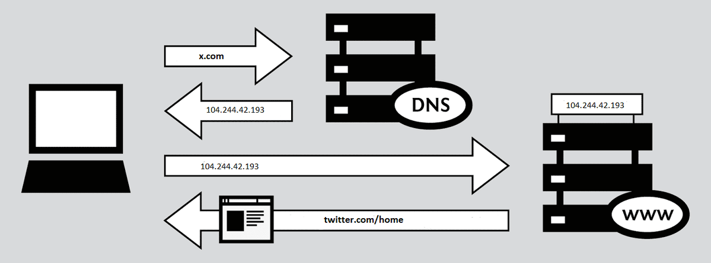
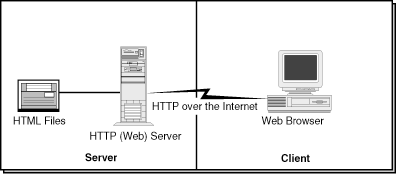

PS
Santander
PS
of data networks and
web architecture
Presenter: Mg. Carlos René Angarita Sanguino
Semester: Seventh
PS
Santander
PS
Internet
It is a decentralized set of interconnected communication networks, which use the TCP / IP family of protocols, ensuring that the heterogeneous physical networks that compose it operate as a single logical network, of global reach.
PS
Santander
PS
Gracias
- Email: carlosreneas@ufps.edu.co
- Sitio: https://sites.google.com/site/carlosangaritas
- Horario asesoría: Lunes 8-9 am, Viernes 8-10 am
PS
Santander
PS
A little history
| 2006 | The Internet reached one billion one hundred million users. It is anticipated that in ten years, the number of navigators of the Network will increase to 2,000 million. |
| 1989 | Integration of OSI protocols in the Internet architecture, facilitating the use of different communication protocols. Tim Berner Lee realize the first client-server communication. |
| 1983 | ARPANET changed the NCP protocol over TCP / IP |
| 1969 | The first computer connection, known as ARPANET, was established between three universities in California and one in Utah, United States |
| 1961 | Leonard Kleinrock published from MIT the first document on the theory of packet switching |
PS
Santander
PS
OSI Model
The Open Systems Interconnection model (OSI model) is a conceptual model that characterizes and standardizes the communication functions of a telecommunication or computing system without regard to their underlying internal structure and technology.

PS
Santander
PS
TCP/IP Model
The Internet protocol suite is the conceptual model and set of communications protocols used on the Internet and similar computer networks. It is commonly known as TCP/IP because the original protocols in the suite are the Transmission Control Protocol (TCP) and the Internet Protocol (IP).

PS
Santander
PS
Communication Protocols
Is a system of rules that allow two or more entities of a communications system to transmit information via any kind of variation of a physical quantity. These are the rules or standard that defines the syntax, semantics and synchronization of communication and possible error recovery methods. Protocols may be implemented by hardware, software, or a combination of both.

PS
Santander
PS
Services and Internet Protocols
- Web (WWW). Hypertext files.
- HTTP: HyperText Transfer protocol.
- Email (protocol SMTP).
- Transmission of files (FTP y P2P).
- Conversations on line "chat" (IRC).
- Telephony (VoIP).
- TV (IPTV).
- Remote Access (SSH y Telnet).
- Games on line.
- Access infrastructure and cloud servicies.

PS
Santander
PS
Network Port
A port is always associated with an IP address of a host and the protocol type of the communication, and thus completes the destination or origination network address of a communication session. A port is identified for each address and protocol by a 16-bit number, commonly known as the port number. For example, an address may be "protocol: TCP, IP address: 1.2.3.4, port number: 80", which may be written 1.2.3.4:80 when the protocol is known from context.
Specific port numbers are often used to identify specific services.
- 21: File Transfer Protocol (FTP)
- 22: Secure Shell (SSH)
- 23: Telnet remote login service
- 25: Simple Mail Transfer Protocol (SMTP)
- 53: Domain Name System (DNS) service
- 80: Hypertext Transfer Protocol (HTTP) World Wide Web
- 110: Post Office Protocol (POP3)
- 119: Network News Transfer Protocol (NNTP)
- 123: Network Time Protocol (NTP)
- 143: Internet Message Access Protocol (IMAP)
- 161: Simple Network Management Protocol (SNMP)
- 194: Internet Relay Chat (IRC)
- 443: HTTP Secure (HTTPS)
PS
Santander
PS
IP Address


PS
Santander
PS
Request a web page

PS
Santander
PS
Architecture Client – Server
